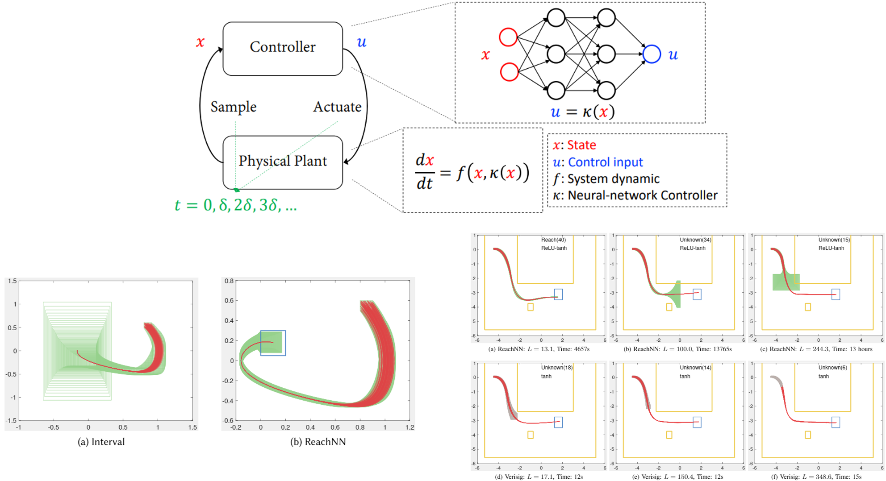
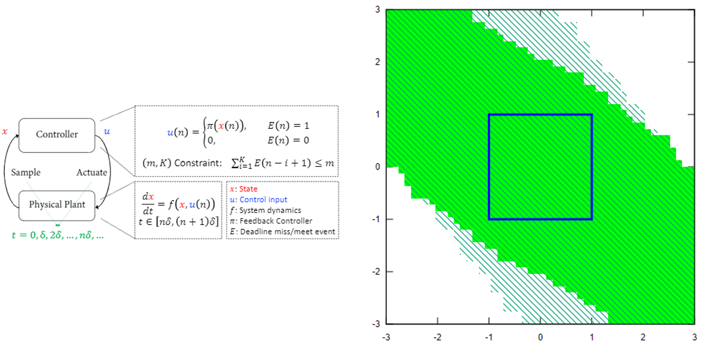

|
Research
Research Interests
My research interests include design and verification of various cyber physical systems, e.g. hybrid systems, neural-network controlled systems.
Tools
|
 |
ReachNN*, is a tool that verifies the reach-avoid specification for neural-network controlled systems. The theoretical foundation of ReachNN* is the use of Bernstein polynomials to approximate any Lipschitz-continuous neural-network controller, with provable approximation error bounds. Then the resulting polynomial systems can be verified by current tools, e.g. Flow*. Benefiting from that Bernstein polynomials are universal approximators, ReachNN* has the capability to handle the networks with different types of activation functions. The error bound analysis relies on the partition of the state space and is accelerated by GPU-based parallel computing. Additionally, when the given neural-network controller is hard to verify, ReachNN* also features optional controller re-synthesis via a technique called verification-aware knowledge distillation (KD) to obtain a verification-friendly neural-network controller by reducing the Lipschitz constant of the original controller. ReachNN* is available HERE.
C.Huang, J.Fan, W.Li, X.Chen, and Q.Zhu. ReachNN: Reachability Analysis of Neural-Network Controlled Systems. ACM Transactions on Embedded Computing Systems (TECS), 18:1–22, October 2019.
J.Fan, C.Huang, W.Li, X.Chen, and Q.Zhu. Towards Verification-Aware Knowledge Distillation for Neural-Network Controlled Systems. International Conference on Computer Aided Design (ICCAD), November 2019.
J.Fan, C.Huang, W.Li, X.Chen, and Q.Zhu. ReachNN*: A Tool for Reachability Analysis ofNeural-Network Controlled Systems. International Symposium on Automated Technology for Verification and Analysis (ATVA), October 2020.
|
|
 |
SAW, is a tool for safety analysis of weakly-hard systems, in which traditional hard timing constraints are relaxed to allow bounded deadline misses for improving design flexibility and runtime resiliency. Our approach first discretizes the safe state set into grids and constructs a directed graph, where nodes represent the grids and edges represent the reachability relation. Based on graph theory and dynamic programming, our approach can effectively find the safe initial set (consisting of a set of grids), from which the system can be proven safe under given weakly-hard constraints. It is now available HERE.
C.Huang, W.Li, and Q.Zhu. Formal verification of weakly-hard systems. International Conference on Hybrid Systems: Computation and Control, April 2019.
C.Huang, KC.Chang, CW.Lin and Q.Zhu. SAW: A Tool for Safety Analysis of Weakly-hard Systems. International Conference on Computer-Aided Verification (CAV), July 2020.
|
Publications
You can also find my publications through Google Scholar Profile.
|